246 férőhelyes, 123 szobás szállás, ingyen WiFivel, saját étteremmel és wellness szolgáltatásokkal.
Az elhelyezkedése kedvező, a Nyíregyházi Állatpark szinte a szomszédban van, a Sóstóhoz is kényelmesen el lehet sétálni és egy vonat és több buszmegálló is van a közelben.
Étkezésre a szálláson található étteremben lenne lehetőség, de ezen kívűl az állatkert saját étterme vagy a közelben lévő La Terazza olasz kifőzde is kiváló lehet.
Az ára közvetlen átjárással az Aquarius élmény- és parkfürdőbe félpanzióval 20 900 forint fő/éj, ha meg az “All Inclusive” ajánlatot szeretnénk, az 26 400 forint fő/éj.
Az egyetlen egy hátrány, hogy a hotel január kilencedikétől határozatlan ideig bezár, viszont ha egy év végi kirándulást tervezünk, akkor addigra nagy valószínűséggel kinyit.
Abi Diákszálló Nyíregyháza
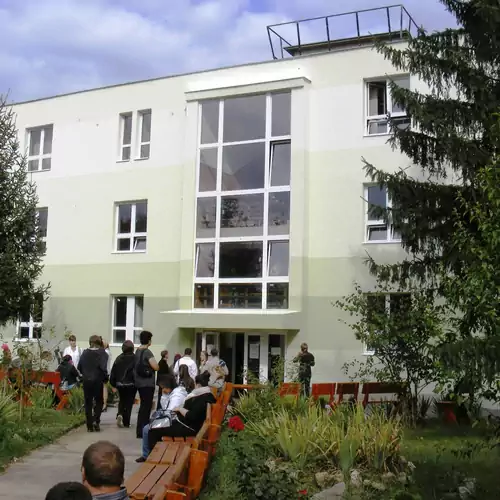
13 szobás, 80 férőhelyes szállás ingyenes WiFivel és saját szállással. 5 illetve 8 fős szobák vannak.
Kicsit távolabb van a központtól, viszont található buszmegálló a közelben, amivel könnyen be lehet jutni a központba.
Bográcsozásra és grillezésre a szálláson van lehetőség, ezen kívűl a szállás saját éttermében is lehet. 10 perc sétára található Ati bátyó étkezdéje, ez a kifőzde is jó lehetőség lehet az étkezésre.
A szállás június közepéig csak hétvégente van nyitva, viszont június közepe után augusztus 20-ig minden nap rendelkezésre áll.
A szállás június közepéig csak hétvégente van nyitva, viszont június közepe után augusztus 20-ig minden nap rendelkezésre áll.
A diákszálló 2600 forint fő/éj.
Hotel Sandra Ifjusági Szálló
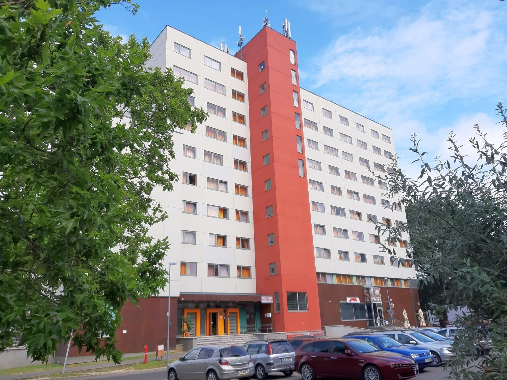
428 férőhelyes, 210 szobás szállás.
Viszonylag közel van a központhoz, buszmegállók is vannak a közelében, így az utazás nem lesz probléma.
Étkezésre a 16 perc sétára található Eperjes Étteremben lehetne lehetőség.
Egy darab három ágyas szoba 18 000 forint, ami azt jelenti, hogy egy főnek 6 000 forint.
Utazás
Vonattal
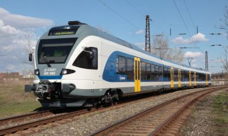
A Keletiből hétköznaponként és hétvégente is óránként indulnak vonatok, amikkel átszállás nélkül el tudunk jutni Nyíregyházára.
Egy felnőttnek vonattól függően 3700 forint és 5020 forint között mozog a jegy ára, míg egy 14 és 18 év közötti fiatalnak szintén.
Bérelt busszal
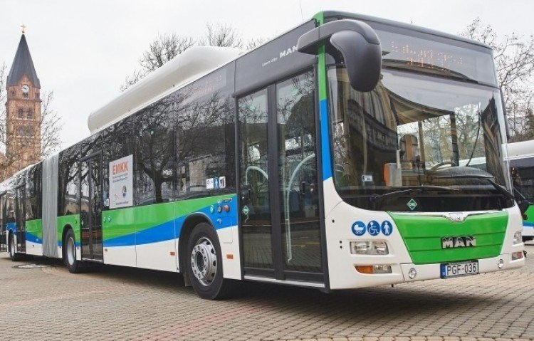
Bérelt busszal 49 főre 450 forint kilométerenként az ára, így Nyíregyházára körülbelül 108 000 forint lenne. A fők növekedésével növekedik a kilométerenkénti ár is. Ez főle nagyobb csoportokkal érné meg.
Nyíregyházán belül
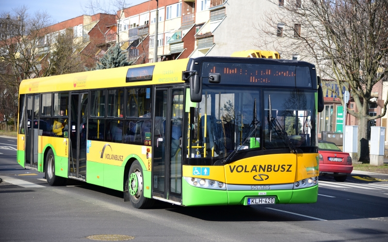
Nyíregyházán belül Volánbusszal lehet közlekedni, itt a jegy 350 forint egy buszra.
Ez egy olasz kifőzde nem messze a Hotel Sóstótól. Az étterem közelében buszmegálló is megtalálható, így ha nem a Hotel Sóstóban szállnak meg, akkor is könnyen megközelíthető.
Az étteremben mindenféle olasz étel megtalálható és még az áruk sem vészes.
Elérhetősége: info@laterrazza.hu
+36 70 299 1212
Ati bátyó étkezdéje
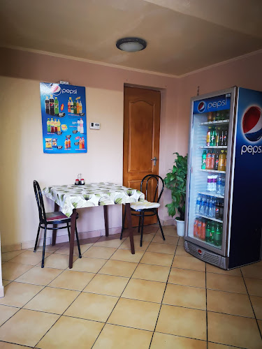
Ebben az étkezdében közkedvelt ételekkel találkozhatunk, olcsó áron. Biztosak lehetünk benne, hogy mindenki találni fog olyan ételt magának, amit szívesen megeszik.
Tíz perc sétára található tőle egy buszmegálló, ezen kívűl az Abi Diákszálló közelében vn, ha esetleg ott szállnak meg.
Elérhetősége: 06 70 312 2679
06 30 613 2236
Eperjes étterem
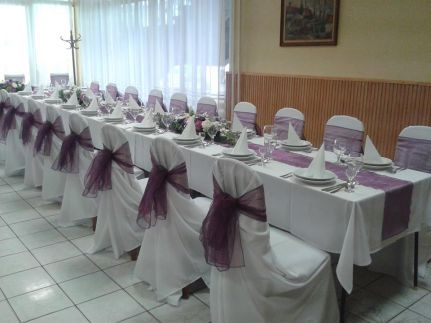
Az Eperjes étteremben magyaros ízekkel találkozhatunk, jó áron. Közelében van egy buszmegálló tíz perc sétára, ezen kívűl a Hotel Sandrától 16 perc sétára található.
Itt is találkozhatunk fiatalok által nagyon szeretett ételekkel, így nem kell attól félni, hogy valaki éhen marad.
Közel a központhoz található meg ez az étkezde, több buszmegállóval a közelében, így a megközelítése nagyon egyszerű.
Lehet menüből választani, ami egy osztálykirándulás esetén megkönnyíti a tanárok dolgát, ezen kívűl lehet étlapról is választani, viszonylag olcsón.
Elérhetősége: 06/20-260-3790
Bevásárlás
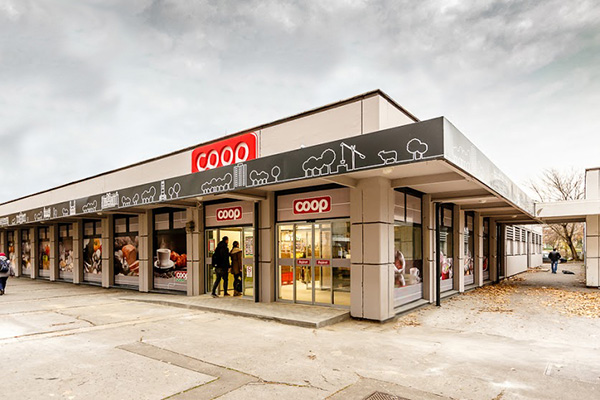
A központban a Luther utcai buszmegálló mellett lévő Coop-ban van lehetőség vásárolni.
Nyíregyháza állatparkja sok érdeklődőt vonz magához. Európa egyik legnagyobb állatállománya található meg itt. Egy fél- vagy akár egy egész napot is el lehetne itt tölteni, hiszen a parknak saját étkezdéje is van.
Hősök tere
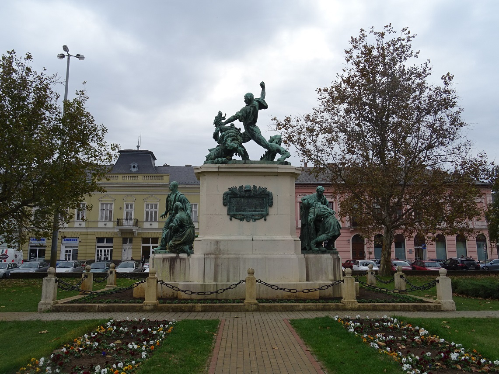
Egy gyönyörű parkosított tér, aminek történelmi vonatkozása is van. Jó programlehetőség lenne, ha például ebéd utáni pihenés gyanánt a diákok itt foglalkozhatnának szabadon.
Városi jégpálya
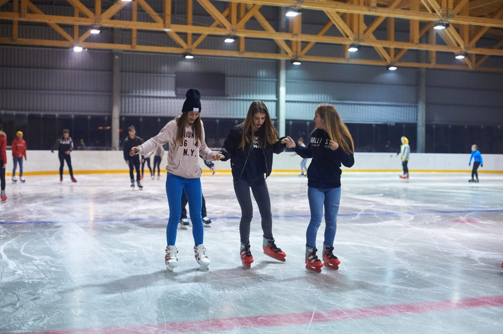
Egy 1800 négyzetméteres jégkorcsolyapálya, büfével, ruhatárral. Egy fél napos kikapcsolódásnak pont tökéletes lehet, viszont hátránya, hogy csak novemberben és decemberben van nyitva.
Netkvíz
A netkvíz egy interaktív mobilos program, amivel olcsón, jó időre le lehet kötni a diákokat, helyszíntől függetlenül.
Egy alkalmazás, amit mobilon vagy tableten lehet használni kérdéseket tesz fel a diákoknak, akik akár csoportba rendeződve egymás ellen is versenyezhetnek.
Idelális program egy osztálynak, mert edukatív és szórakoztató is.
Fazekas bemutató és kézműves foglalkozás
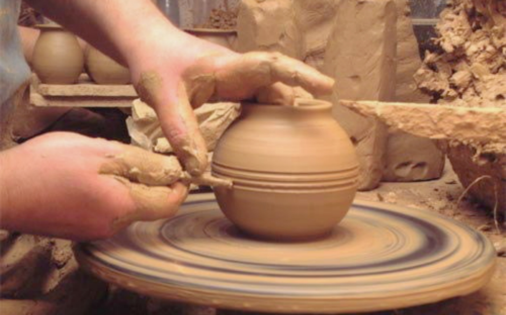
Rendkívűl olcsón egy izgalmas és érdekes programon vehetünk részt ezen a foglalkozáson.
Megtanítják a diákokat agyagból fazekakat csinálni, és ezt a gyakorlatban is kipróbálhatják.
Viszont előfordulhat, hogy nem mindenkinek tetszene ez a program, ezért ajánlott ide egy olyan osztállyal menni, ahol több az olyan ember, akinek jó a kézügyessége.
Sóstói Múzeumfalu
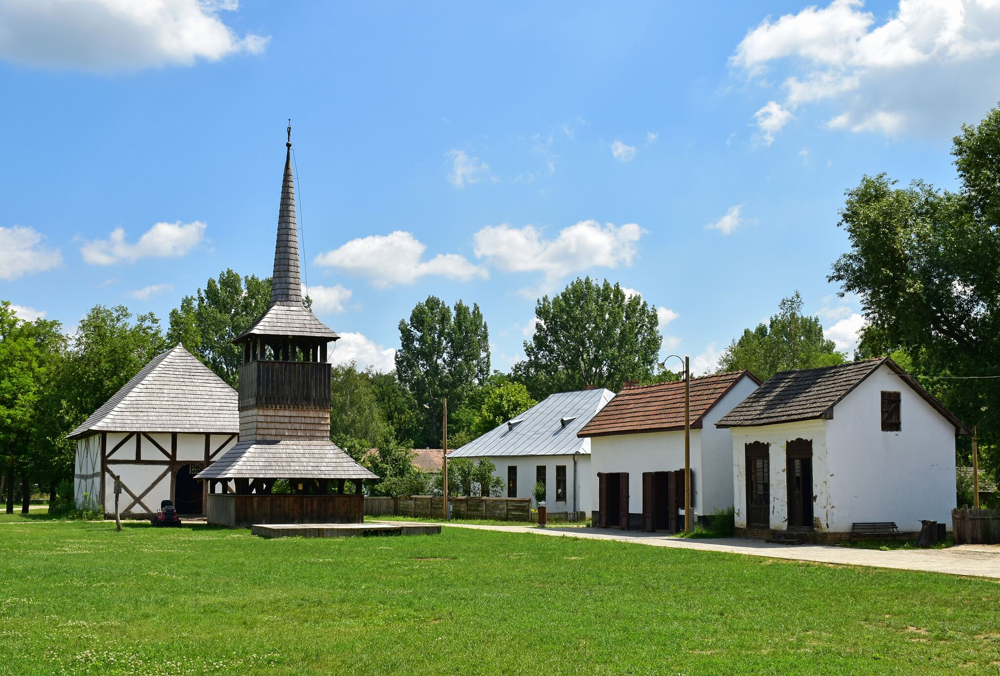
A második legnagyobb szabadtéri néprajzi múzeum Magyarországon. Eltérő tájegységek építészetét mutatja be ezen kívűl rengeteg programon is részt lehet venni.
Hátránya, hogy 2023 áprilisáig zárva tart.